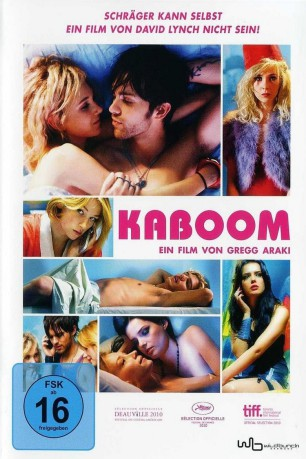
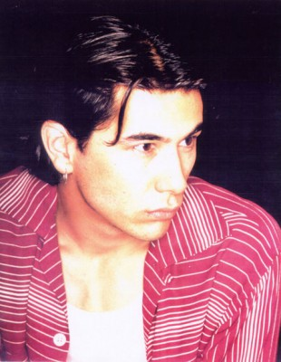

#9285 Kaboom
 
 IMDB-Wertung: 5.7 / 10
IMDB-Wertung: 5.7 / 10  Metascore: 0
Metascore: 0 
Smith wohnt zusammen mit seinem durchgeknallten Mitbewohner Thor in dem Wohnheim einer Kunstakademie. Als er einen spirituellen Typen namens London trifft, freundet er sich sofort mit ihm an. London gibt ihm halluzinogene Kekse und Smith glaubt im Rauschzustand, dass er Zeuge eines Mordes wird. Doch war Smith einfach nur high oder entspricht die Geschichte der Wahrheit?
Jahr: 2010
Dauer: 86 Minuten
FSK: 16
Land: USA Studio: IFC FilmsTonspuren: DTS - ,
Untertitel: Deutsch,
Auflösung: 1080p (1920x800) Größe: 3921 MB
Genre: Thriller, Sci-Fi, Komödie, Liebe, Mystery
Regisseur: Gregg Araki
Drehbuch: Gregg Araki
Soundtrack: Robin Guthrie, Vivek Maddala, Mark Peters, Ulrich Schnauss
Darsteller:
 Thomas Dekker als Smith
Thomas Dekker als Smith Haley Bennett als Stella
Haley Bennett als Stella- Chris Zylka als Thor
 Roxane Mesquida als Lorelei
Roxane Mesquida als Lorelei Juno Temple als London
Juno Temple als London- Andy Fischer-Price als Rex
- Nicole LaLiberte als Red-Haired Girl
- Jason Olive als Hunter
-  James Duval als The Messiah
- Brennan Mejia als Oliver
 Kelly Lynch als Nicole
Kelly Lynch als Nicole- Carlo Mendez als Milo
- Christine Nguyen als Freshman Bimbo
- Brandy Futch als Drug Fairy Nymph (uncredited)
- Natalie Alyn Lind als Cult Victim (uncredited)
- Jen Mears als Student (uncredited)
- Michael James Spall als Smith's Dad
- Sean Bresnahan als Surgeon (uncredited)
Datei: X:\2010(G-M)\Kaboom (2010, FSK16, 1920x800).mkv seit 20.07.2018
Festplatte: HD 2010(G-Z)-2011(A-F)
 Es gibt insgesamt 85 Filme in der Gruppe '2010(G-M)'
Es gibt insgesamt 85 Filme in der Gruppe '2010(G-M)'